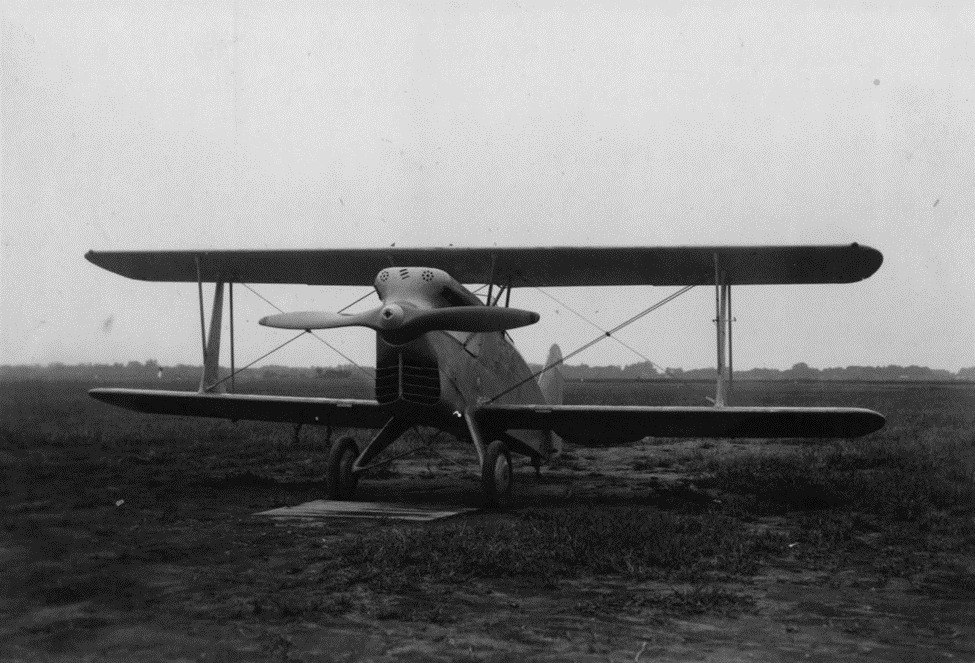
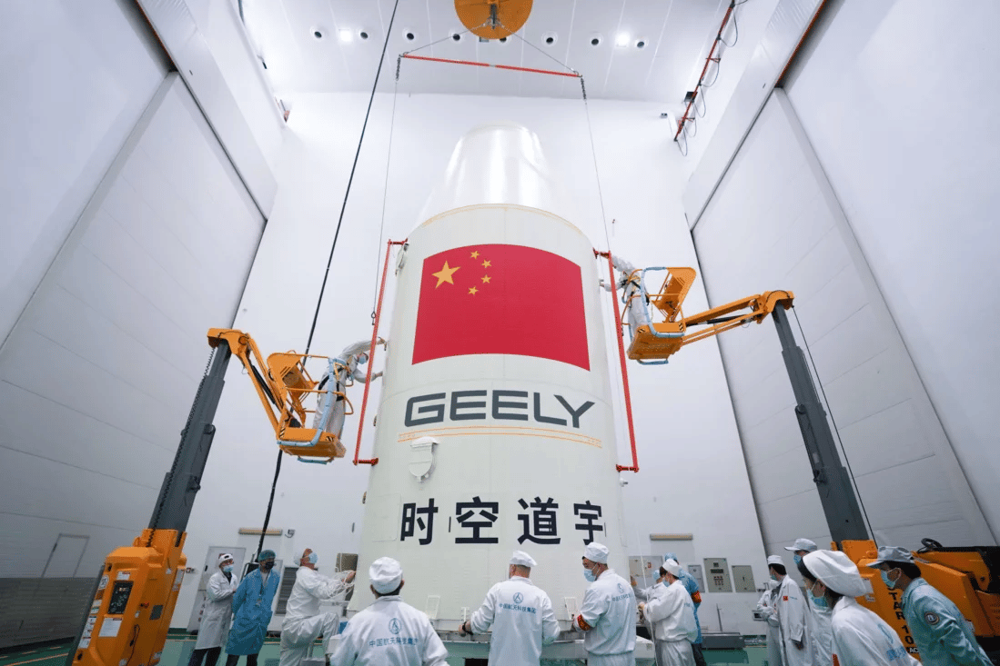

История развития беспилотного транспорта в большей степени началась в 1947 году, когда сформировали американский военно-транспортный самолет B-54, который совершил трансатлантический перелет полностью под управлением автопилота, который управлял не только полетом, но также взлетом и посадкой. Разработка и применение беспилотного транспорта в авиации до сих пор является наиболее многочисленным, тк движение происходит в пространстве с малым количеством препятствий.
По этой же причине применение автопилота является проблемным на дорогах. Исключением можно назвать железные дороги метрополитена. Уже в 1967 году в Лондоне открыли первую автоматизированную линию. В настоящее время метро Копенгагена является полностью беспилотным, где поезда без машинистов сами движутся по линиям и совершают высадку/посадку пассажиров.
Успешным освоением наземных дорог в истории развития беспилотного трансопрта можно назвать сеть автоматического транспорта ULTra, открытую в 2010 году в аэропорту Хитроу. Система рассчитана на перевозку одного или нескольких пассажиров в режиме такси по личным маршрутам, в пределах выделенных полос для движения.
Отдельно стоит уточнить, что с первых дней автоматизации транспорта, в основе лежит безопасность движения. Автопилот всегда имеет возможность быстрого отключения, чтобы пилот, следящий за полетом, мог вмешаться в его работу. Системы Копенгагенского метро и такси ULTra всегда обслуживают несколько человек, следящих за работоспособностью системы, и готовых взять дистанционное управление в свои руки в случае непредвиденной ситуации.

Биплан Fairy Queen использовавшийся без пилота в качестве мишени для летчиков, зенитных орудий
Современная история беспилотного транспорта показывает, что он довольно популярен и продолжает устремляться в будущее!
В настоящий момент развитие беспилотного транспорта переживает одновременно три революции: электрификацию трансмиссии, подключение пассажирских транспортных средств к единой сети и замену водителей автономными системами вождения. Эти процессы не только идут параллельно, но и в значительной мере влияют на автомобилестроение, подобно тому, как в свое время революция подтолкнула заменить конные повозки на самоходный транспорт. Это первая часть короткой серии блогов, в которой делается попытка охватить историю беспилотников, от задумки до производства.

Развитие беспилотного транспорта в Китае